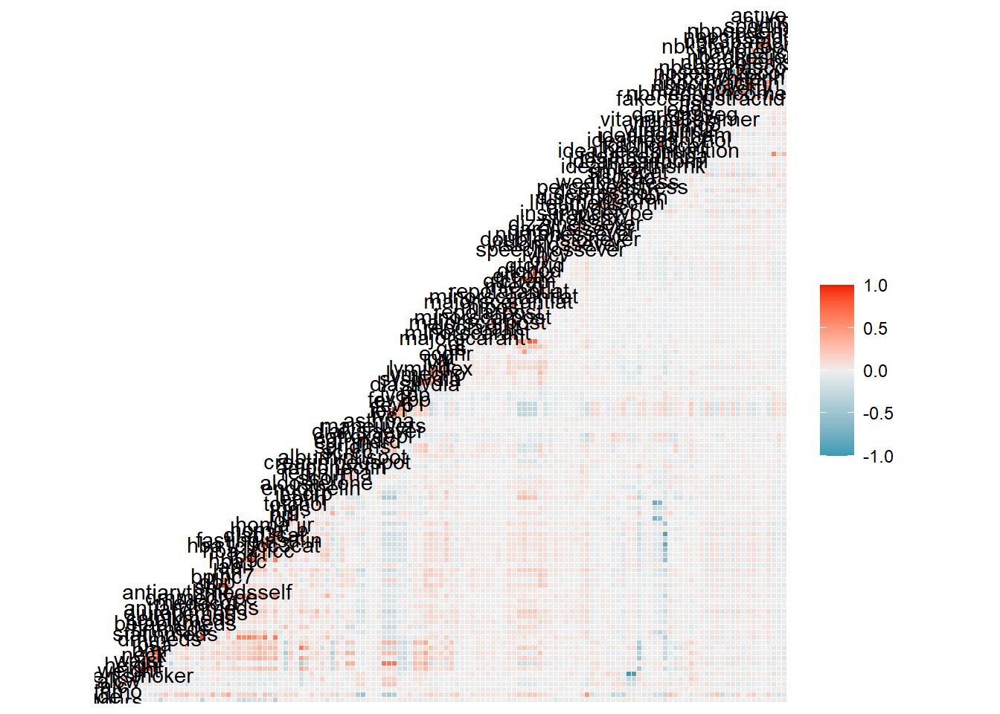
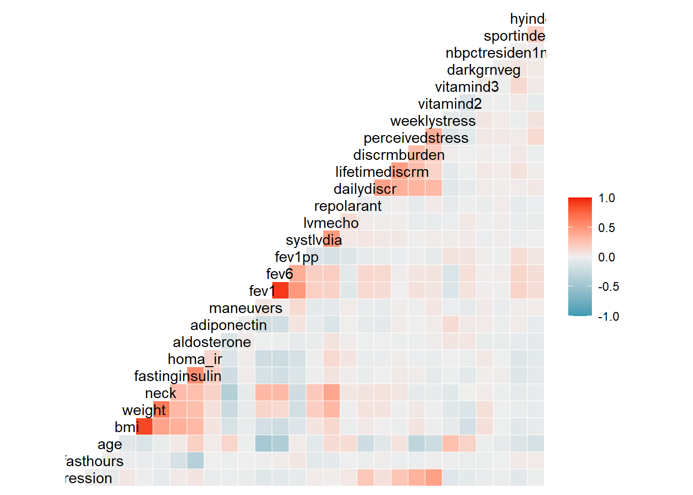
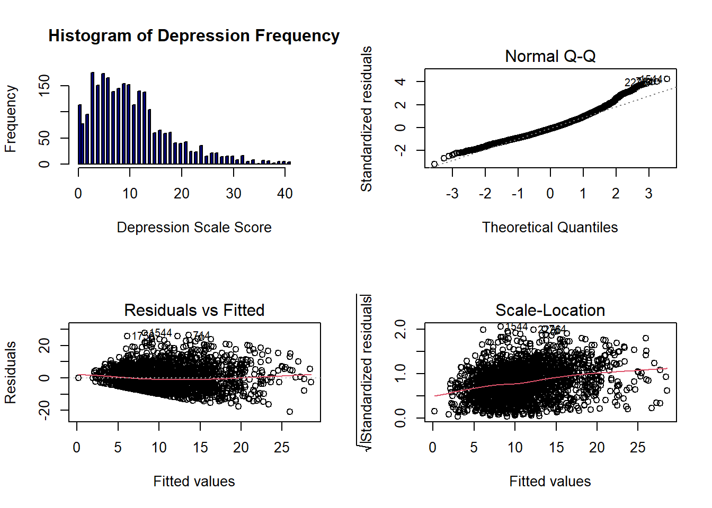
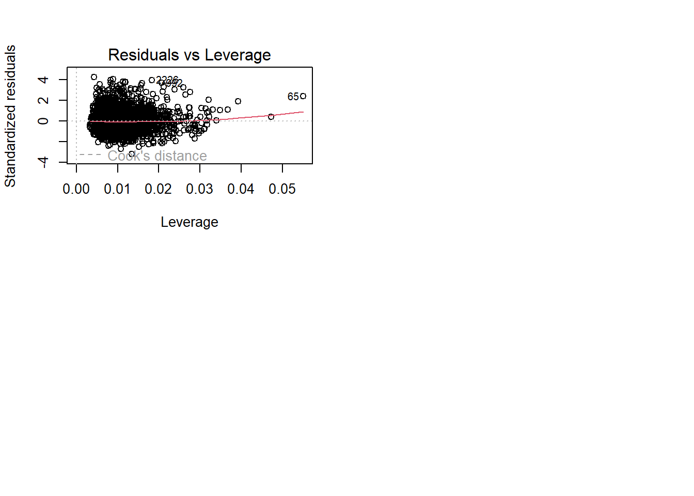
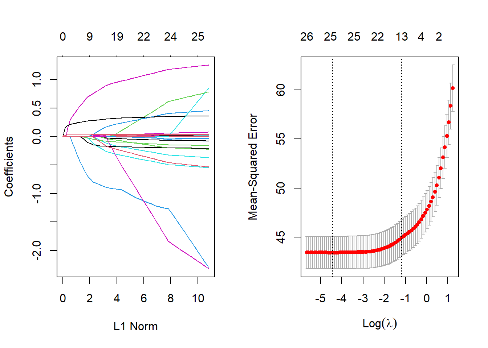
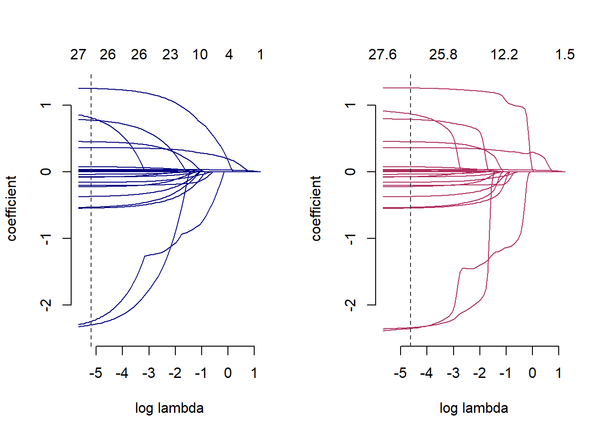
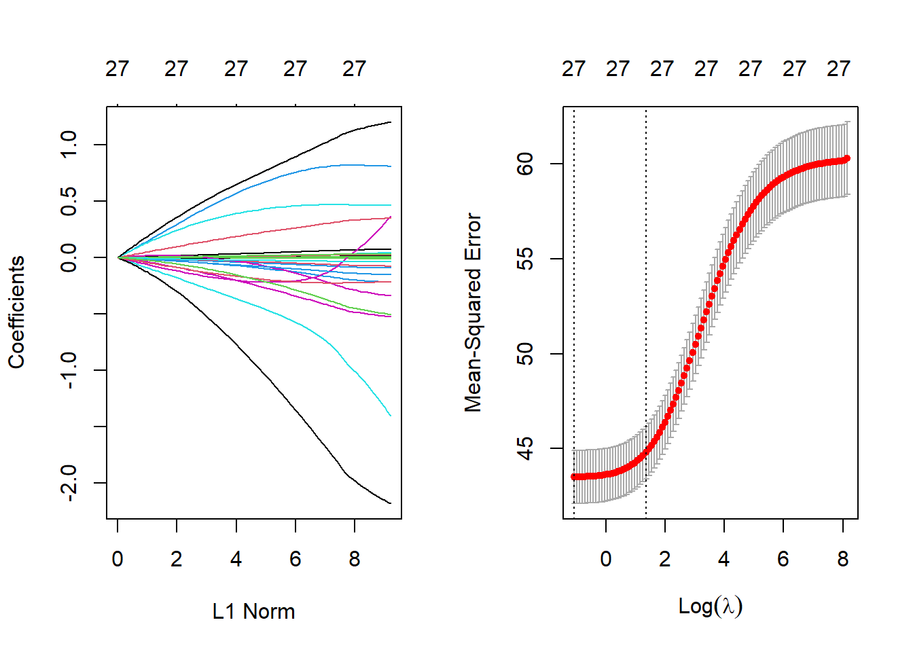

Regularized Regression and the Jackson Heart Study Dataset: Multicollinearity
When two or more variables are highly collinear, LASSO regression will select one randomly and drop the others to zero. Elastic Net adapts the properties of both LASSO and Ridge, so dropping coefficients is less frequent than for LASSO, but can still occur. Whereas, Ridge regression will keep highly collinear variables and adjust their importance with weight. Although this technique introduces more variability in the coefficients and p-values, the prediction of the dependent variable is not affected, but keeping large models can consume large amounts of computational time. memory and power. LASSO performs well when there are more observations than variables and does well with multicollinearity, simplifying the model by dropping variables including collinear variables.
Although we started by observing the full JHS Visit 1 dataset of 2653 observations and 198 variables with the correlation matrix, we simplified the final model used for the Regularization Regression methods to exclude non-numeric data and categorical data and to include variables from several “hot spots” from the larger correlation matrix shown below. It is important to note that these regularization regression techniques can be used with other methods such as logistic regression had we decided to analyze the categorical data as well. However, many of the categorical variables were, in fact, composites of or redundant variables to the continuous variables included in this study.
Correlation Matrix heat map and Variance Inflation Factor (VIF) Scores suggest high multicollinearity for Jackson Heart Study Visit 1

Variance Inflation Factor and Tolerance Scores suggest severe multicollinearity in Jackson Heart Study Visit 1
Taken together, there is evidence of multicollnearity in the data that could pose a problem with interpretations of linear models. Modifying linear models with regularization through LASSO, Ridge and ElasticNet are most valuable for predictions. VIF scores over 5 & Tolerance scores under 0.2 indicate severe multicollinearity. We can use regularization to shrink the importance of the coefficients that are inflated by collinearity.
VIF Tolerance
fasthours 1.188521 0.84138180
age 3.568913 0.28019737
bmi 24.901065 0.04015892
weight 25.258306 0.03959094
neck 2.786419 0.35888353
fastinginsulin 1.639202 0.61005295Along with the severe multicollinearity found, the data for the depression model violate important assumptions for linear regression (below). The histogram of our dependent variable has more of a gamma distribution with the QQ plot showing heavy tail, also indicating that the data are not normal. Fitted Residuals plot shows a fanning distribution with error variance not constant. Finally, the scale-location plot shows the data are clustered without an equal spread of points, suggesting unequal variances. Although this dataset and model are not ideal for making predictions about depression without first finding the appropriate transformation to meet assumptions (which is beyond the scope of this study), we can still apply regularization to demonstrate the important differences among LASSO, Ridge and Elastic Net.


Analysis of depression model taken from matrix “hot spots” demonstrates reduction of multicollinearity and the LASSO’s feature selection capabilities
Next we highlighted LASSO’s built-in feature selection capabilities and demonstrated how regularization can mediate multicollinearity. Most importantly, the regularized model is more stable with predictions than coefficient and p-values. In order to make predictions, we needed to partition the data for training and testing and find the optimal lambda in order to train the predictive models. We modeled the Total Depressive Symptoms Score (depression) as the Dependent variable (y). To simplify, we worked with continuous data and variables found in several “hot spots” from the correlation matrix above.
Jackson Heart: LASSO (𝞪=1), L1 Norm (lm)
𝞴 x |Slope|
Both LASSO and Ridge shrink coefficients towards constraint region, LASSO’s constraint is towards the absolute value of the slope. In order to minimize the Residual Sum of Squares, we want the modified coefficient closest to that of the OLS Beta. For LASSO, this can be on the axis, essentially zeroing out a coefficient in the model. LASSO is good for feature selection by helping to winnow out the model, and it is good for getting the VIF down (as seen below).
On the left is the path of coefficients shrinking to zero for the linear model,on the right is the optimal lambda is found using the largest lambda with the smallest mean squared error.
[1] 0.01175954
Jackson Heart: LASSO (𝞪=1), L1 Norm (Gamma Penalty)
The path of coefficients shrinking to zero for the LASSO lm distribution is shown on the left, gamma distribution model is shown on the right.Optimal lambda is found using the largest lambda value with the smallest mean squared error. The gamma penalty gives a larger lambda than the lm model.

Jackson Heart: LASSO (𝞪=1), L1 Norm
More Variables are dropped as the Lambda value is increased. Initially, the highest VIF’s were BMI, weight, fev1, fev6 . Note that at the optimal lambda (s2), LASSO has dropped 1 variable from the lm model: fastinginsulin. It kept variables such as bmi (a composite of height and weight) in the optimal lambda model, but with larger lambda values, the highest vif variables are eliminated. Eliminating redundant variables demonstrates LASSO’s automatic feature selection properties. These variables had very large VIF and low Tolerance scores, so dropping them from the model will likely not affect the model’s ability to predict depression; however, we also ran the LASSO with the gamma penalty to see how optimal lambda changes for data with a gamma distribution (bottom panel). Note that at the optimal lambda (seg98), the LASSO has dropped 3 variables from the gamma-penalty=2 model: fastinginsulin, fasthours and weight.
10 x 4 sparse Matrix of class "dgCMatrix"
s1 s2 s3 s4
(Intercept) 7.2345149003 7.2459049017 6.848887e+00 8.906514
fasthours 0.0154461464 0.0152448395 . .
age 0.0294692360 0.0294523061 1.534655e-02 .
weight -0.0003486204 -0.0002235076 . .
neck -0.0802404801 -0.0801305475 . .
bmi 0.0176598946 0.0172365464 . .
fastinginsulin . . . .
homa_ir 0.0769312162 0.0767433347 3.154321e-02 .
aldosterone -0.0769100321 -0.0767902446 -2.957659e-02 .
adiponectin -0.0001319057 -0.0001316802 -3.294485e-05 . 10 x 1 sparse Matrix of class "dgCMatrix"
seg98
intercept 7.6329993761
fasthours .
age 0.0295323517
weight .
neck -0.0585369916
bmi 0.0083291197
fastinginsulin .
homa_ir 0.0620299899
aldosterone -0.0696243295
adiponectin -0.0001134787Jackson Heart: Ridge (𝞪=0), L2 Norm
𝞴 x Slope2
Both LASSO and Ridge shrink coefficients towards a constraint region, Ridge’s constraint is towards the squared slope. In order to minimize the Residual Sum of Squares, we want the modified coefficient closest to that of the OLS Beta. However, unlike LASSO, Ridge can’t get the coefficient to all the way to zero, but it can get really close and is also good for getting the VIF down.
[1] 0.3427968
Note that Ridge has preserved all the variables in the model. No Variables were dropped as the Lambda value is increased.
6 x 4 sparse Matrix of class "dgCMatrix"
s1 s2 s3 s4
(Intercept) 7.683856888 7.683856888 8.907952186 10.0177820079
fasthours 0.015702540 0.015702540 0.004486646 -0.0051594351
age 0.034959017 0.034959017 0.017302881 -0.0015970507
weight -0.009863117 -0.009863117 -0.004290117 -0.0005102981
neck -0.089650693 -0.089650693 -0.064795298 -0.0186218701
bmi 0.045435093 0.045435093 0.023309123 0.0081255094Jackson Heart: Elastic Net (𝞪=0.5) L1 & L2 Norm
Elastic Net dropped only 2 of the same variables as LASSO above. The distinction between the two might become more pronounced with larger models.
6 x 1 sparse Matrix of class "dgCMatrix"
s1
(Intercept) 10.53647059
fasthours 0.06413026
age 0.24773363
bmi 0.04583096
weight .
neck -0.30749960Jackson Heart: Comparing Models
Model performance was overall very similar among the four models tested with LASSO Regression coming out slightly ahead in this instance (lowest RMSE, highest R2 values).
LASSO >Elastic Net>OLS>Ridge
RMSE R-squared
LASSO 6.305145 0.3074768
Ridge 6.313302 0.3056838
ElasticNet 6.30564 0.3073681
OLS 6.305874 0.3073168